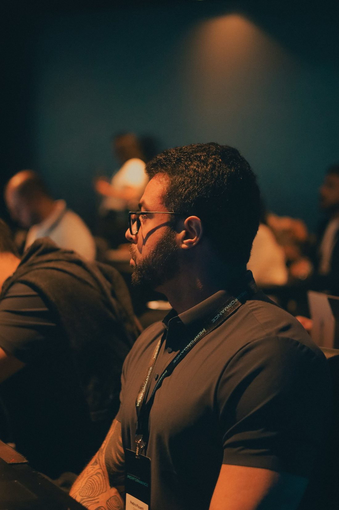

Tráfego pago · Negócios locais
Cliente novo,todo dia.
Anúncios no Instagram e no Facebook, gerenciados por quem faz isso há 4 anos — para o seu negócio chegar todo dia em quem tem o perfil do seu cliente.
Previsível
Indicação é ótima. Mas indicação não escala — e não avisa quando vai chegar.
Para quem tem o perfil
No Instagram e no Facebook, seu anúncio encontra quem tem o perfil do seu cliente — na sua cidade, no seu bairro.
Sem depender do alcance
O anúncio trabalha enquanto você atende — todo dia, sem esperar o post viralizar.
Medindo cada real
Você sabe quanto entrou, quanto voltou e o que ajustar. Todo dia, às 8h, no seu WhatsApp.
Caso real · primeiro cliente · desde 2023
Da cadeira ao salão
40 contatos por dia, em média.
Yuri tinha acabado de sair do salão onde era auxiliar quando me chamou. Foi meu primeiro contrato — e segue comigo até hoje.
Confere ao vivo → @yuridellarovereComo funciona
Conversa
Entendo seu negócio, seu público e sua região. Sem questionário infinito.
Campanhas no ar
Estratégia, segmentação e artes estáticas incluídas. Você aprova, eu publico.
Otimização contínua
Relatório diário às 8h e ajustes constantes, com apoio comercial para transformar contato em cliente.
Sem letra miúda
- Sem fidelidade — fica quem está vendo resultado
- Sem burocracia — começamos numa conversa
- Artes estáticas incluídas
- Apoio comercial nas conversões
- Condições especiais para facilitar a entrada

Quem gerencia
4 anos de tráfego, 5 de área comercial — inclusive em agências. Hoje gerencio também um e-commerce que investe mais de R$ 10 mil por dia em anúncios.
Quem cuida do seu anúncio precisa entender de venda. Eu vim de lá.